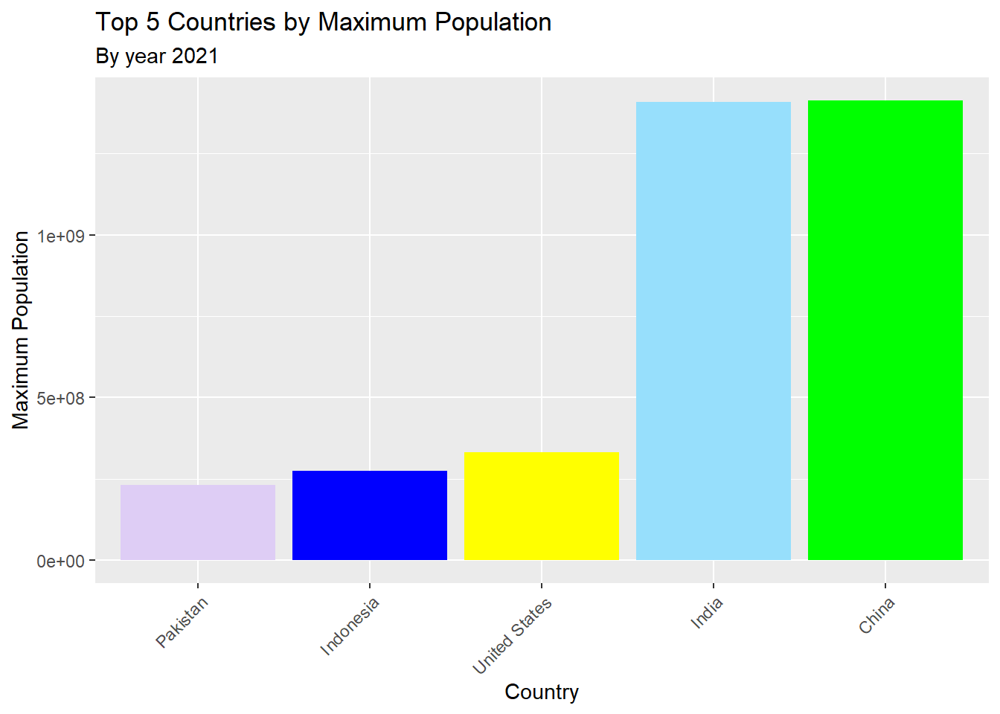
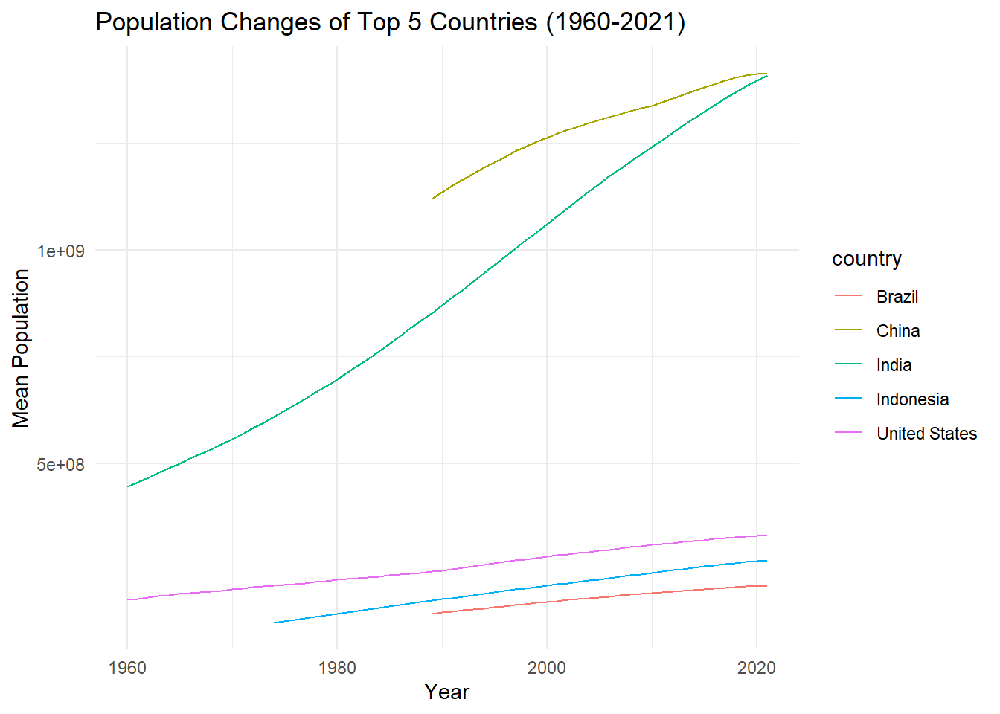
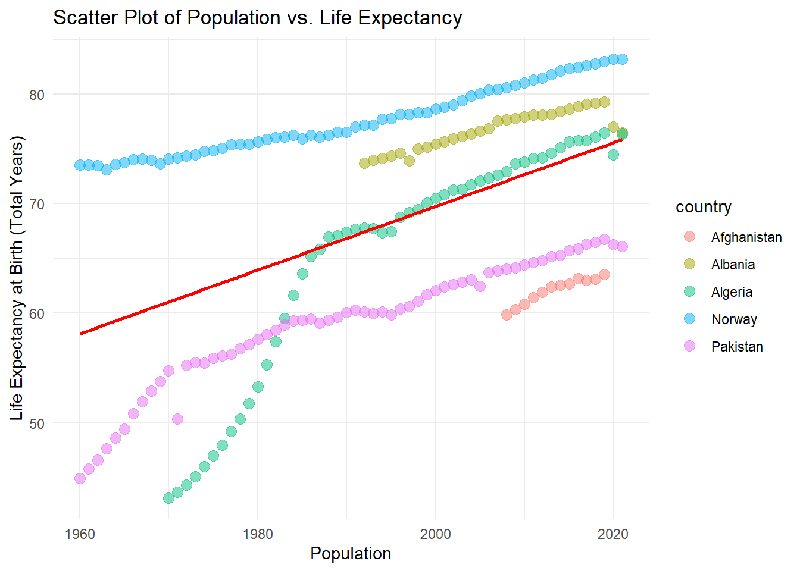
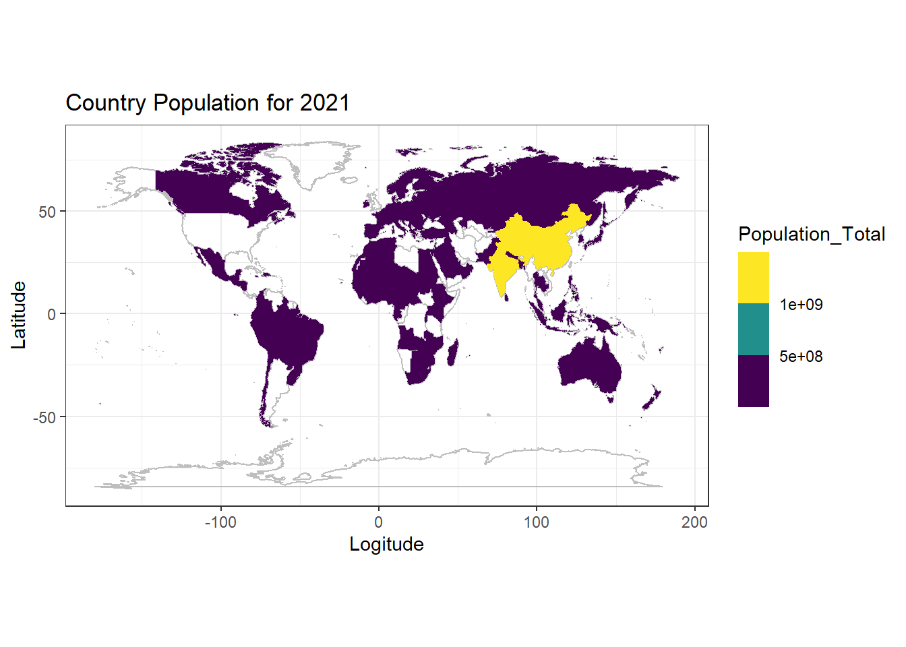

UNICEF Data Visualisations
Exploring Population and Life Expectancy Growth from 1960 to 2021
Bar Chart
The bar chart showcases the highest populated countries ranked in the order of China, India, the US, Indonesia, and Pakistan for 2021. China leads with the highest population due to its extensive landmass and historically rapid growth. India closely follows, also benefiting from a large geographical area and sustained population expansion. The US ranks third, leveraging economic prosperity to support its significant population. Indonesia and Pakistan, with expansive territories, secure their positions among the top populous nations
Time Series Plot
The time series plot vividly captures the population dynamics of China, India, the US, Indonesia, and Brazil spanning from 1960 to 2021. Notably, China experienced a staggering increase from 667,070,000 to 1,412,175,000, showcasing remarkable growth over the period. This massive rise underscores the imperative for robust Universal Health Coverage (UHC) frameworks to address the healthcare needs of expanding populations, ensuring equitable access to quality healthcare services despite demographic disparities.

Scatter plot with regression line:
The scatter plot depicts the relationship between life expectancy and population for Afghanistan, Albania, Algeria, Norway, and Pakistan, with life expectancy on the x-axis and population on the y-axis. Notably, Algeria’s regression line appears steeper compared to Norway, suggesting a more pronounced positive impact on health systems and education in Algeria, leading to accelerated improvements in both life expectancy and population growth.
`geom_smooth()` using formula = 'y ~ x'
World Map: Country Population for 2021
The world map illustrates population density across countries, with darker shades representing higher densities. This highlights areas where access to Universal Health Coverage (UHC) may be crucial due to concentrated populations. Factors such as job opportunities, living conditions, and government policies influencing density also impact the need for equitable healthcare provision. Understanding population density aids in planning UHC services effectively, ensuring all residents have access to essential healthcare regardless of population concentration.
